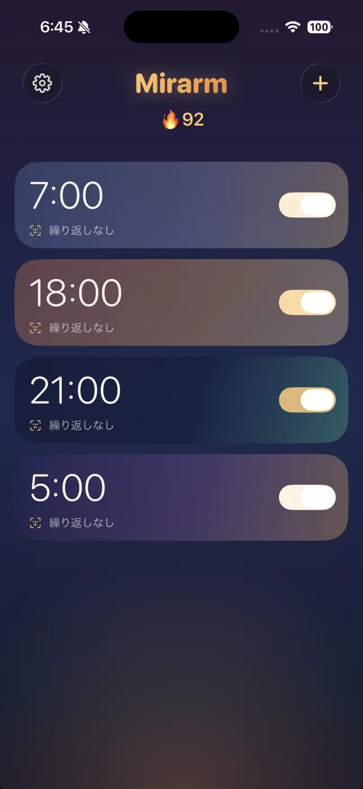

こんな朝に
- 止めた記憶がない。
- スヌーズを、何度も押している。
- 布団を出る前に、また眠っている。
Mirarmは、アラームを止める操作を、洗面所など登録した場所まで歩く朝の行動に結びつけます。
毎朝の流れ
夜に決めて、朝は鏡の前まで歩きます。手順は5つです。
-
寝る前に、時刻と音を決める
音はApple Musicの曲か、内蔵の音から。だんだん大きくなる鳴り方や、バイブレーションも選べます。
画面: アラームの編集画面。時刻、繰り返し、ラベル、サウンド、音量、鏡ミッション、予備アラームの設定。 -
朝、アラームが鳴る
止めても、決めた間隔で予備のアラームがまた鳴ります。
画面: アラーム一覧。 -
鏡のある場所まで、歩く
洗面所など、登録した鏡のある場所へ。暗ければ照明をつけます。
画面: 「登録した場所の照明を点けてください」の案内と、「照明を点けました」のボタン。 -
本人確認をして、鏡の前で撮る
Face ID・Touch ID・パスコードのどれかで確かめてから、登録した鏡の前で撮影します。
画面: Face IDの確認が通り、「鏡に自分を映してください」の案内と撮影の枠が出る。枠の中の人物と洗面所は使用イメージ。 -
場所が一致したら、止まる
ミッション完了。成功が続くと、炎のマークと日数で記録が残ります。
画面: 「おはようございます」と時刻、炎のマークと1日連続の表示。
ふだんの目覚ましとして
鳴らし方
- Apple Musicの曲か、内蔵の音好きな曲を、目覚ましの音にできます。
- だんだん大きくなる鳴り方バイブレーションとも組み合わせられます。
- 予備アラーム止めても、決めた間隔でまた鳴ります。
アラームの持ち方
- 複数のアラーム曜日の繰り返し、ラベル、音量をそれぞれに。
- 鏡ミッションはアラームごとにオンとオフを選べます。
- 連続記録
ミッション成功が続いた日数を、炎のマークで。
撮った写真のこと
- 朝の写真
- 判定のために撮った写真は、外部へ送らず、照合のあとに破棄します。
- 登録した場所の写真
- 設定から見返せるように、縮小してiPhoneの中に保存します。外部へは送りません。
広告と購入に伴うデータの扱いは、プライバシーポリシーにまとめています。
料金とProの特典
ミッション
100
回連続成功で、
Proをプレゼント。
Proをプレゼント。
獲得後は、同じiPhoneでずっとPro。
使わない日は、カウントそのまま。
10月28日からの新価格。購入金額はApp Storeでご確認ください。
買い切り
月額
無料でも、アラーム3個まで。
Proは広告なし・アラーム無制限・登録場所を追加。
月額Proを1か月無料で
MIRARM2026を使う
MIRARM2026無料期間後は月額100円で自動更新。解約はAppleの設定から。
100回特典の条件
- ミッションを予定時刻から15分以内にクリアすると1回成功です。15分ちょうども対象です。
- 1日1回まで加算され、日付は現地時刻の朝4時に切り替わります。
- アラームを使わない日は連続記録を維持します。
- 予定時刻から15分を過ぎても未完了、緊急解除、広告ストップで連続記録がリセットされます。画像判定途中の失敗ではリセットされません。
- 100回連続成功でProを獲得できます。獲得後は同じiPhoneで利用でき、連続記録が途切れても権利は失効しません。機種変更・再インストール後の引き継ぎは保証されません。
無料コードの条件
MIRARM2026は月額Proが1か月無料になるAppleのオファーコードです。無料期間後は通常価格の月額100円で自動更新されます。解約はAppleの設定から行えます。
500人分を発行したコードです。上限に達すると引き換えられません。期限は2026年11月30日です。正確な期限・適用条件はAppleの引換画面でご確認ください。
鳴らないことがある場面
iPhone用のアプリです。iOS 26以降はAlarmKitで鳴らします。
iOS 17〜25でも動きますが、マナーモード・集中モード・通知の設定によって鳴らない場合があります。
- アプリを強制終了すると、選んだ音で鳴らないことがあります。
- 電源が切れていると鳴りません。
- 夜のあいだ待機するため、電池を多めに使います。充電しながらの利用をおすすめします。